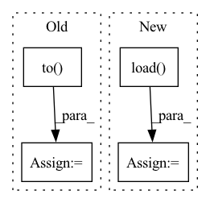

Pattern ID :683

Before Change
wandb.log({"train/loss": loss.item()})
if (i+1) % args.sample_freq == 0:
model.eval()
dec = decoder.generate(torch.LongTensor([args.bos_token]*len(encoded[:args.test_samples]))[:, None].to(device), args.max_seq_len,
eos_token=args.pad_token, context=encoded.detach()[:args.test_samples])
pred = token2str(dec[:args.test_samples], dataloader.tokenizer)
truth = token2str(seq["input_ids"], dataloader.tokenizer)
if args.wandb:
table = wandb.Table(columns=["Truth", "Prediction"])
After Change
def train(args):
dataloader = Im2LatexDataset().load(args.data)
dataloader.update(**args)
valdataloader = Im2LatexDataset().load(args.valdata)
valargs = args.copy()
valargs.update(batchsize=args.testbatchsize, keep_smaller_batches=True)
valdataloader.update(**valargs)
device = args.device
In pattern: SUPERPATTERN
Frequency: 3
Non-data size: 4
Instances
Fragment ID: 3376338
Project Name: lukas-blecher/latex-ocr
Commit Name: d52e43388fd9c01f33b5e03bcccbba0a0c8e51b5
Time: 2021-02-15
Author: luk.blecher@gmx.de
File Name: train.py
M Class Name: AnonimousClass
N Class Name: AnonimousClass
M Method Name: train(1)
N Method Name: train(1)
M Parent Class:
N Parent Class:
M File Name: train.py
N File Name: train.py
M Start Line: 21
M End Line: 61
N Start Line: 24
N End Line: 54
'>
Before Change
// Wrap in variables
x, y, u = Variable(x), Variable(y), Variable(u)
x, y = x.to(config.device), y.to(config.device)
u = u.to(config.device)
batches_seen += 1
batch_one_hot = torch.zeros((1, 1, config.label_dim))
After Change
old_checkpoint_filepath = os.path.join(
os.path.abspath(os.getcwd()), "saved/classifier/" + config.load_from_checkpoint + ".pt"
)
checkpoint = torch.load(old_checkpoint_filepath)
model.load_state_dict(checkpoint["model_state_dict"])
optimizer.load_state_dict(checkpoint["optimizer_state_dict"])
onehot_encoder = utils.make_onehot_encoder(config.label_dim)
'>
Fragment ID: 3376341
Project Name: bioshape-lab/pirounet
Commit Name: 54f2915f6fa0972fa56e326adab0c341b4200651
Time: 2022-06-15
Author: papillon@umail.ucsb.edu
File Name: move/fid_train.py
M Class Name: AnonimousClass
N Class Name: AnonimousClass
M Method Name: run_train_classifier(8)
N Method Name: run_train_classifier(8)
M Parent Class:
N Parent Class:
M File Name: move/fid_train.py
N File Name: move/fid_train.py
M Start Line: 51
M End Line: 65
N Start Line: 40
N End Line: 58
'>
Before Change
// Using UNet
// For most of the Active Learning techniques, this model is the same one we used for inference
model = UNet(
dimensions=3,
in_channels=1,
out_channels=2,
channels=(16, 32, 64, 128, 256),
strides=(2, 2, 2, 2),
num_res_units=2,
norm=Norm.BATCH,
dropout=0.2).to(self.device)
model.load_state_dict(torch.load(self.bestModelPath))
model.eval()
After Change
network = self.network
network.load_state_dict(torch.load(self.path))
else:
network = torch.jit.load(self.path)
network = network.to(device) if device else network
network.eval()
return network
'>
Fragment ID: 3376335
Project Name: project-monai/monailabel
Commit Name: 287d4c1eafd3ab1e364e89a4bf9f6e650c68ac77
Time: 2021-04-29
Author: salle@nvidia.com
File Name: sample-apps/segmentation_heart/lib/activelearning.py
M Class Name: MyActiveLearning
N Class Name: MyActiveLearning
M Method Name: get_model(2)
N Method Name: get_model(1)
M Parent Class: ActiveLearning
N Parent Class:
M File Name: sample-apps/segmentation_heart/lib/activelearning.py
N File Name: sample-apps/segmentation_heart/lib/activelearning.py
M Start Line: 40
M End Line: 53
N Start Line: 63
N End Line: 75